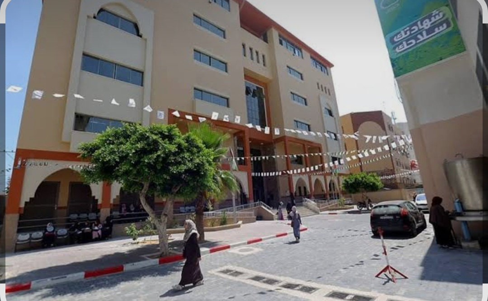
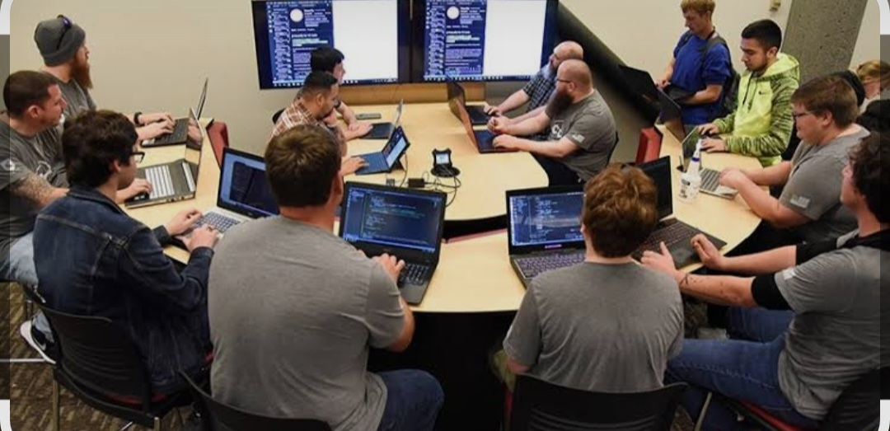
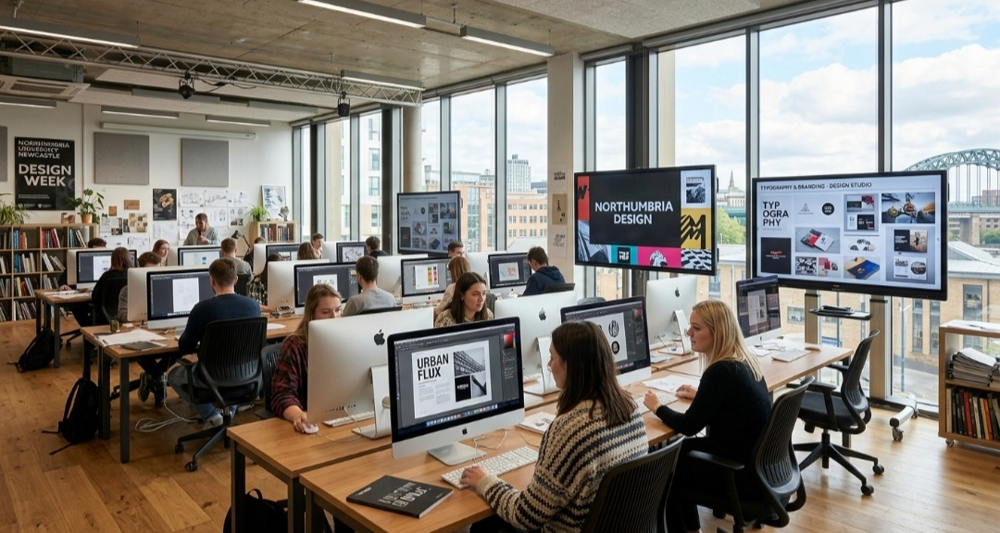

اهلا وسهلا بكم في كلية الحاسبات وتكنولوجيا المعلومات في جامعة الاقصى بغزة
تعد كلية الحاسبات وتكنولوجيا المعلومات من الكليات التي تهتم بمجالات الحاسوب والتكنولوجيا وتهدف الى تنمية مهارات الطلبة واعدادهم للمستقبل
يهتم هذا المجال بالبرمجة والتصميم وانشاء محتوى للويب والموبايل



تطوير صفحات الويب
تصميم ولجهات المستخدم
برمجة تطبيقات الموبايل
انتاج الوسائط المتعددة
البرمجة: تعلم انشاء صفحات الويب.
التصميم: انشاء واجهات جميلة وسهلة الاستخدام.
الوسائط المتعددة: التعامل مع الصور والمحتوى الرقمي.
تطوير المهارات: حل المشكلات والابداع.
تنمية مهارات الطلبة في البرمجة
التعرف على تصميم واجهات المستخدم
انشاء محتوى رقمي مميز
تهتم مجالات الحاسوب والتكنولوجيا بالبرمجة وتطوير الحلول التقنية.
تساعد دراسة هذه المجالات على تنمية التفكير والابداع ومهارات وحل المشكلات.
جامعة الاقصى_غزة
| رقم | اسم المساق | المجال |
|---|---|---|
| 1 | مقدمة في الوسائط المتعددة | الوسائط المتعددة |
| 2 | مبادئ التصميم الجرافيكي | التصميم |
| 3 | تصوير الفيديو والانتاج الرقمي | انتاج المحتوى |

نبذة عن القسم: يهدف هذا القسم الى اعداد كوادر متخصصة في مجال تكنولوجيا المعلومات والاتصالات ,وتصميم انظمة المعلومات وتطويرها ودعمها.
مميزات هذا القسم:التعرف على البرمجة وتطوير البرامج تنمية مهارات التفكير والمنطقي وحل المشكلات التعرف على تصميم انظمة المعلومات وتطويرها
نبذة عن هذا القسم:يعد من احد الاقسام الاكاديمية في جامعة الاقصى,ويهتم بدراسة وتطوير الشبكات الحاسوبية وتقنيات الاتصالات الاسلكية.
مميزات هذا القسم:تزويد الطلبة بالمعرفة والمهارات الازمة لتصميم الشبكات وادارتها وتطوير تطليقات الهواتف النقالة.